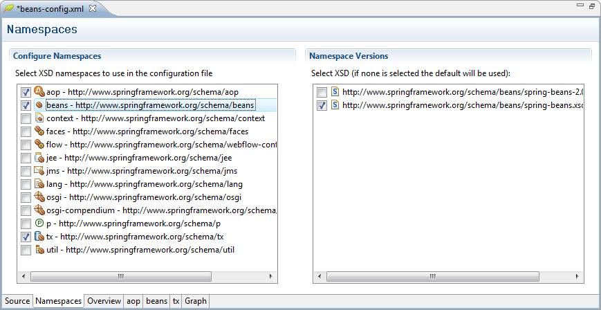
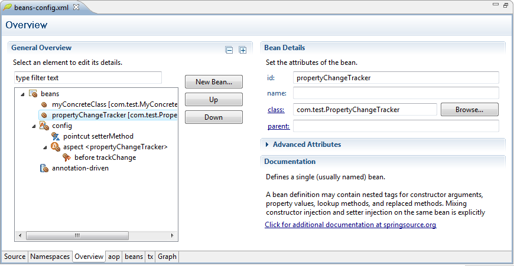
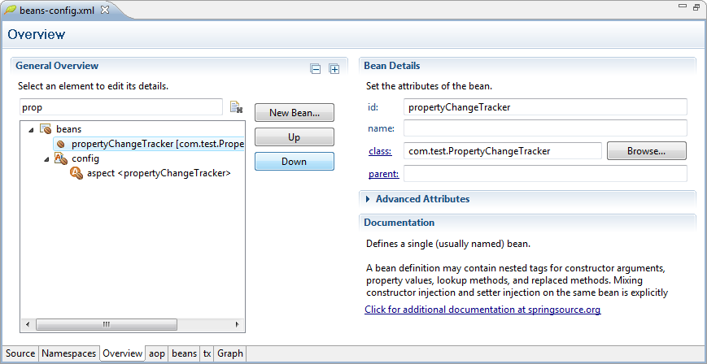
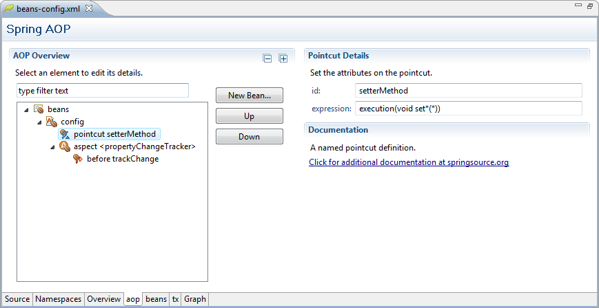
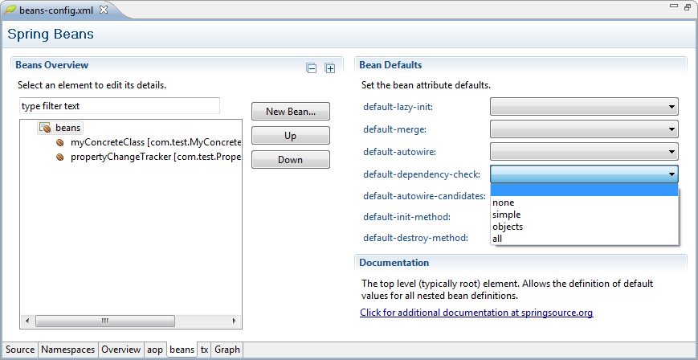
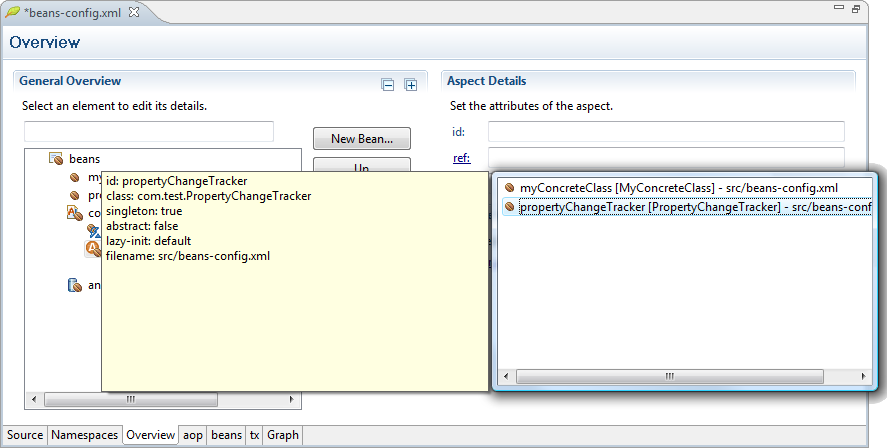
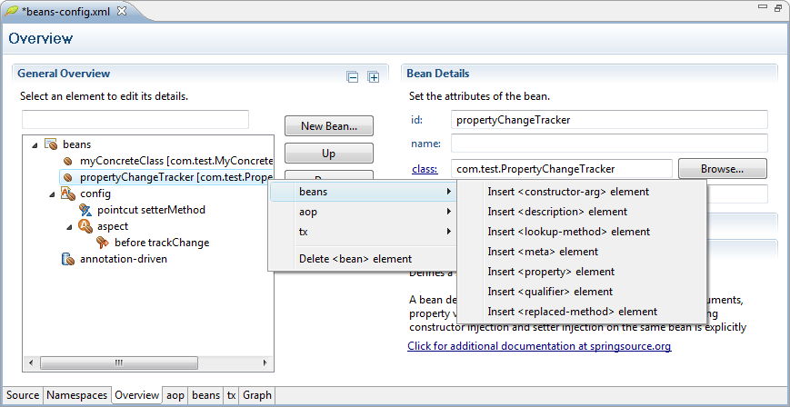

The Namespaces tab of the configuration editor is designed for editing the namespace declarations in the XML file. The left-hand table displays all the namespace URIs available to the SpringSource Tool Suite. Selecting a URI will display a table on the right-hand containing all the known versions of that namespace schema. Click the checkboxes in the URI table to add or remove namespaces from the XML file. Click a checkbox in the version table to select a specific version of the namespace schema. Note that the version table will appear disabled for un-checked namespaces.

The configuration editor will host tabs for most of the namespaces known to the SpringSource Tool Suite. The editor will only display tabs for the namespaces declared in the XML file, and tabs will be added and removed to the editor as namespaces are added or removed from the XML file. When a change in namespace declaration occurs, a dialog will appear reminding the user that the editor tabs have changed. The dialog can be dismissed permanently by checking off the 'Don't remind me again.' button.
The Overview tab of the configuration editor provides you with a view of every element in the XML file. The left-hand table displays all the elements in the XML file starting with the root beans element. Selecting an element will display a details page on the right-hand containing all of the attributes for that element. Most elements will have an additional section on their details page with documentation explaining the element's purpose. Below you can see that the propertyChangeTracker bean has been selected and its id and class are on display. Elements with a large number of attributes such as this one will contain an Advanced Attributes section that is collapsed by default.

Configuration files with a large number of elements can become difficult to navigate. The elements table contains a text filter to help simplify element navigation. Below you can see the elements table filtered on the text 'prop', displaying only the relevant bean and aspect.

The configuration editor will host tabs for most of the namespaces known to the SpringSource Tool Suite. These namespace specific tabs are a great way to scope down a large XML file. Below we can see the same file on the 'aop' tab. Only the elements from the aop namespace are on display.

Below we see the same file on the 'beans' tab. In this example a combo box has been selected and we see all its possible values. The configuration editor is aware of all attributes with pre-defined values and will displays these as combo selections.

When a text field is selected, a light bulb icon will appear if the attribute supports content proposals. Hitting CTRL-SPACE will bring up a list of possible values for the attribute. In this example an aspect has been selected and we can see two bean proposals for the aspect's ref attribute.

Adding a new element to the configuration file is as simple as selecting the parent and right clicking. A menu will appear listing all the possible children, separated by namespace with the default namespace at the top. New bean definitions can also be creating by clicking the 'New Bean...' button, which will invoke the new bean wizard.
